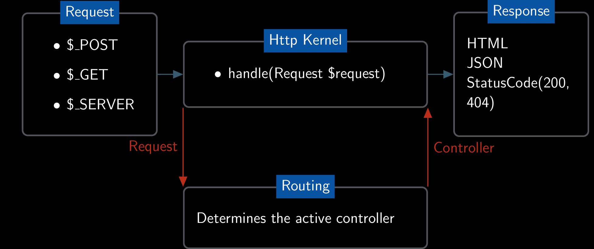
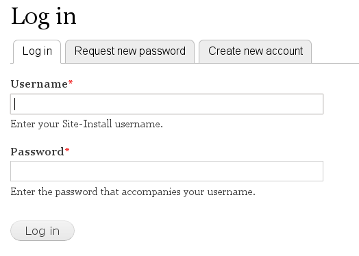
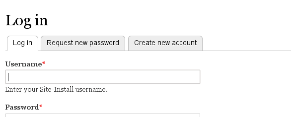
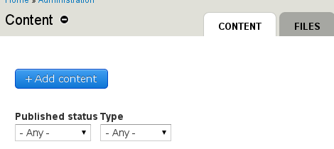
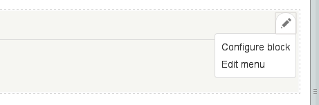
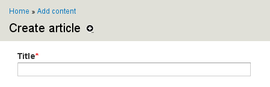

D8 - The successor(s) of hook_menu()
Routing
D7 hook_menu()
D7 hook_menu()
function user_menu() {
$items['user'] = array(
'title' => 'User account',
'title callback' => 'user_menu_title',
'page callback' => 'user_page',
'access callback' => TRUE,
'file' => 'user.pages.inc',
'weight' => -10,
'menu_name' => 'user-menu',
);
return $items;
}
D7 Page callback
function user_page() {
global $user;
if ($user->uid) {
return drupal_goto("$user/$user->uid");
}
else {
return drupal_get_form('user_login');
}
}
Drupal 8

Routing
... in the past
function user_page() {
global $user;
if ($user->uid) {
return drupal_goto("$user/$user->uid");
}
else {
return drupal_get_form('user_login');
}
}
D8: Controller
namespace Drupal\user;
use Drupal\Core\Controller\ControllerBase;
class UserController extends ControllerBase {
public function userPage() {
$user = $this->currentUser();
if ($user->id()) {
$response = $this->redirect('user.view', array('user' => $user->id()));
}
else {
$response = $this->formBuilder()->getForm('Drupal\user\Form\UserLoginForm');
}
return $response;
}
}
D8: $module.routing.yml
user.page:
path: '/user'
defaults:
_content: '\Drupal\user\Controller\UserController::userPage'
requirements:
_access: 'TRUE'
More/advanced routing.yml
Available controller types
user.page:
path: '/user'
defaults:
_content: '\Drupal\user\Controller\UserController::userPage'
_content: Content on a page_form: Forms_controller: Raw data, like json_entity_view: node.view: A rendered entity_entity_form: node.add: An entity edit/add form_entity_list: node: A list of entities
Route parameters
page arguments- Pass variables from the URL to the route
- Convert IDs to entities
views_ui.form_display:
path: '/admin/structure/views/{js}/display/{view}/{display_id}/{type}'
defaults:
_controller: '\Drupal\views_ui\Form\Ajax\Display::getForm'
class Display extends ViewsFormBase {
public function getForm(ViewInterface $view, $display_id, $js, $type = NULL) {
$this->setType($type);
// Do all the magic.
return parent::getForm($view, $display_id, $js);
}
}
Default values
user.cancel_confirm:
path: '/user/{user}/cancel/confirm/{timestamp}/{hashed_pass}'
defaults:
_content: '\Drupal\user\Controller\UserController::confirmCancel'
timestamp: 0
hashed_pass: ''
Title
user.view:
path: '/user/{user}'
defaults:
_entity_view: 'user.full'
_title: User
_title_callback: 'Drupal\user\Controller\UserController::userTitle'
public function content() {
$build = array();
$build['#markup'] = $this->t('Drupalcamp Vienna, 2013');
$build['#title'] = \Drupal::service('date')->format(REQUEST_TIME, 'short');
}
}
Access checkers
user.admin_account:
path: '/admin/people'
defaults:
_controller: '\Drupal\user\Controller\UserAdmin::userList'
requirements:
_permission: 'administer users'
- Based upon roles, permissions:
_permission: "administer nodes" _role: "administrator" - Based upon access to Entities (view, update, delete)
_entity_access: $entity_type.$operation - Everyone!
_access: TRUE
Complex access checking
- Must match ALL (default)
- ANY must match
node.add_page:
path: '/node/add'
defaults:
_content: '\Drupal\node\Controller\NodeController::addPage'
requirements:
_permission: 'administer content types'
_node_add_access: 'node'
options:
_access_mode: 'ANY'
ControllerBase
namespace Drupal\Core\Controller;
class ControllerBase {
protected function entityManager() { }
protected function cache($bin = 'cache') { }
protected function config($name) { }
protected function keyValue($collection) { }
protected function moduleHandler() { }
protected function url($route_name, $route_parameters = array(), $options = array()) { }
protected function l($text, $route_name, array $parameters = array(), array $options = array()) { }
protected function currentUser() { }
protected function t($string, array $args = array(), array $options = array()) { }
protected function redirect($route_name, array $route_parameters = array(), $status = 302) { }
}
ControllerBase example
namespace Drupal\node\Controller;
class NodeController extends ControllerBase {
/**
* Builds a node page render array.
*/
protected function buildPage(NodeInterface $node) {
return array(
'nodes' =>
$this->entityManager()
->getViewBuilder('node')
->view($node)
);
}
}
Summary
- Register routes via $module.routing.yml
- Set a callback via
_content: class::method - Set a title via
_title - Set access in
requirements - Use ControllerBase methods
Forms
Forms
- Forms are classes
- Uses
_forminstead of_content - No method needed
user.login:
path: '/user/login'
defaults:
_form: '\Drupal\user\Form\UserLoginForm'
_title: 'Log in'
requirements:
_access: 'TRUE'Example form
class UserLoginForm extends FormBase {
public function getFormId() { return 'user_login_form'; }
public function buildForm(array $form, array &$form_state) {
$form['name'] = array(
'#type' => 'textfield',
'#title' => $this->t('Username'),
);
$form['pass'] = array(
'#type' => 'password',
'#title' => $this->t('Password'),
);
return $form;
}
public function submitForm(array &$form, array &$form_state) {
$account = $this->userStorage->load($form_state['uid']);
$form_state['redirect_route'] = array(
'route_name' => 'user.view',
'route_parameters' => array('user' => $account->id()),
);
user_login_finalize($account);
}
}
Helper forms
\Drupal\Core\Form\FormBase\Drupal\Core\Form\ConfigFormBase\Drupal\Core\Form\ConfirmFormBase\Drupal\Core\Entity\EntityFormController
Local tasks
$module.local_tasks.yml
user.page:
route_name: user.page
tab_root_id: user.page
title: 'Log in'
weight: -10
user.register:
route_name: user.register
tab_root_id: user.page
title: 'Create new account'
user.pass:
route_name: user.pass
tab_root_id: user.page
title: 'Request new password'
Local actions
$module.local_actions.yml
node.type_add:
route_name: node.type_add
title: 'Add content type'
appears_on:
- node.overview_types
Contextual links
$module.contextual_links.yml
block_configure:
title: 'Configure block'
route_name: 'block.admin_edit'
group: 'block'
Breadcrumbs
Path based breadcrumb
- No need to specify entries in hook_menu()
- Path based:
/node/add/article
/node/add
/node
/
Menu links
- Ongoing discussion/work: https://drupal.org/node/2047633
- Probably hook_default_menu_links()
- Explicit support for parents
Potential example
function user_default_menu_links() {
// Registration and login pages.
$links['user'] = array(
'link_title' => 'My account',
'weight' => -10,
'route_name' => 'user.page',
'menu_name' => 'account',
);
// User listing pages.
$links['admin.people'] = array(
'link_title' => 'People',
'route_name' => 'user.admin_account',
'description' => 'Manage user accounts, roles, and permissions.',
'parent' => 'admin',
'weight' => -4,
);
}
Raw data
{
"nid":[ { "value":"1" } ],
"title":[ { "value":"DRUPALCAMP VIENNA" } ],
"uid":[ { "target_id":"1" } ],
"status":[ { "value":"1" }
"body":[ { "value":"Connecting Open Minds\r\n22-24. November 2013, Vienna\r\n",
"format":"basic_html",
"summary":""
} ]
}
Data controller
user.autocomplete:
path: '/user/autocomplete'
defaults:
_controller: '\Drupal\user\Controller\UserAutocompleteController::autocompleteUser'
class UserAutocompleteController {
public function autocompleteUser(Request $request) {
$matches = $this->userAutocomplete->getMatches($request->query->get('q'));
return new JsonResponse($matches);
}
}
REST
Create, Read, Update and Delete data via HTTP
- https://www.youtube.com/watch?v=w6dqzDbY78k
Thank you, any questions?
Come to the sprints on sunday!Dynamic routes
services:
route_subscriber.search:
class: Drupal\search\Routing\SearchRouteSubscriber
tags:
- { name: event_subscriber }
class SearchRouteSubscriber extends RouteSubscriberBase {
protected function routes(RouteCollection $collection) {
$path = 'search/' . $search_info['path'] . '/{keys}';
$defaults = array(
'_content' => 'Drupal\search\Controller\SearchController::view',
'plugin_id' => $plugin_id,
'keys' => '',
);
$route = new Route($path, $defaults, $requirements);
$collection->add('search.view_' . $plugin_id, $route);
}
}
Custom access checkers
services:
access_check.permission:
class: Drupal\user\Access\PermissionAccessCheck
tags:
- { name: access_check }
class PermissionAccessCheck implements StaticAccessCheckInterface {
public function appliesTo() {
return array('_permission');
}
public function access(Route $route, Request $request, AccountInterface $account) {
$permission = $route->getRequirement('_permission');
return $account->hasPermission($permission) ? static::ALLOW : static::DENY;
}
}
Custom paramconvert
paramconverter.vienna:
class: Drupal\vienna\ParamConverter
tags:
- { name: paramconverter, priority: 10 }
class ParamConverter implements ParamConverterInterface {
public function applies($definition, $name, Route $route) {
// Return
return $name == 'vienna.example';
}
public function convert($value, $definition, $name, array $defaults, Request $request) {
// Convert the value.
}
}
Custom breadcrumb
namespace Drupal\taxonomy;
class TermBreadcrumbBuilder extends BreadcrumbBuilderBase {
public function build(array $attributes) {
if ($attributes[RouteObjectInterface::ROUTE_NAME] == 'taxonomy.term_page') {
$term = $attributes['taxonomy_term'];
$breadcrumb = array();
while ($parents = taxonomy_term_load_parents($term->id())) {
$term = array_shift($parents);
$breadcrumb[] = $this->l($term->label(), 'taxonomy.term_page', array('taxonomy_term' => $term->id()));
}
$breadcrumb[] = $this->l($this->t('Home'), '< front >');
$breadcrumb = array_reverse($breadcrumb);
return $breadcrumb;
}
}
}
$module.services.yml
services:
taxonomy_term.breadcrumb:
class: Drupal\taxonomy\TermBreadcrumbBuilder
tags:
- { name: breadcrumb_builder, priority: 1002 }
Theme negotiators
- Determine the used theme on a request
theme.negotiator.defaulttheme.negotiator.usertheme.negotiator.admin_theme
Custom negotiator
theme.negotiator.admin_theme:
class: Drupal\user\Theme\AdminNegotiator
arguments: ['@current_user', '@config.factory', '@entity.manager']
tags:
- { name: theme_negotiator, priority: -40 }
class AdminNegotiator implements ThemeNegotiatorInterface {
public function determineActiveTheme(Request $request) {
$path = $request->attributes->get('_system_path');
if ($this->user->hasPermission('view the administration theme') && path_is_admin($path)) {
return $this->configFactory->get('system.theme')->get('admin');
}
}
}